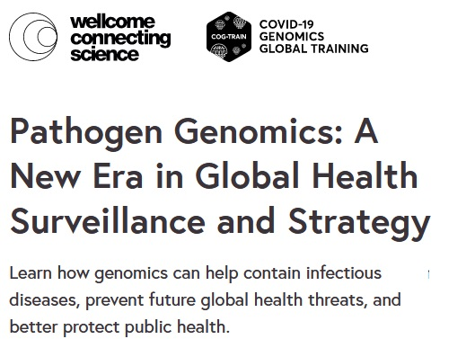

Educación: Cursos y Programas
El RSG-Colombia y su equipo han realizado multiples encuentros educacionales durante su trayectoria en bioinformatica. Estos encuentros estan basados en multiples cursos que se pueden realizar en linea, y de forma 100% virtual. Como equipo realizamos la fomentación y compartimos con ustedes una lista de cursos, links y descripciones en torno a la biología computacional y bioinformática. Cada uno de estos cursos requiere el registro en paginas web como coursera donde se puede realizar la solicitud de ayuda economica en paises de bajos ingresos, y en future learn donde los cursos realizados por the Welcome Genome Campus, UK son completamente gratis. Cabe resaltar que el RSG no realiza ningun sponsorship con ninguna de estas organizaciones, solamente implementamos la difusión acertada de la educación en bioformática. Caulquier realización economica no hace parte del RSg ni de sus aliados.
Lista de Cursos
| Especialización en Bioinformática de Plantas por la Universidad de Toronto. Consta de cuatro cursos individuales, el cual incluye un poryecto final. Plant Bioinformatics Specialization en Coursera introduce competencias y recursos bioinformáticos básicos, como el Genbank del NCBI, Blast, alineaciones de secuencias múltiples, filogenética en Bioinformatic Methods I, seguidos de interacción proteína-proteína, bioinformática estructural y análisis de ARN-seq en Bioinformatic Methods II. En Bioinformática vegetal cubrimos 33 herramientas en línea específicas para plantas, desde navegadores de genomas hasta minería de datos transcriptómicos, pasando por análisis de promotores/redes y otros. Por último, en Plant Bioinformatics Capstone se utilizan estas herramientas para hipotetizar un papel biológico para un gen de función desconocida, resumido en un informe de laboratorio escrito. Link https://www.coursera.org/specializations/plant-bioinformatic-methods | |
| En este curso podras aprender a: -Aprenda a ensamblar un genoma bacteriano -Aprenda a anotar un genoma bacteriano -Aprenda a generar un árbol filogenético a partir de un conjunto de genomas bacterianos -Aprenda a realizar análisis comparativos básicos de un conjunto de genomas bacterianos Link https://www.coursera.org/learn/informatics | |
| Este curso cubrirá el tema de la secuenciación del genoma completo (WGS) de genomas bacterianos, que cada vez es más relevante para el sector médico. La tecnología y las aplicaciones de la WGS ocupan un lugar destacado en la agenda política internacional, ya que los métodos clásicos están siendo sustituidos por la tecnología WGS y, por tanto, las herramientas bioinformáticas son extremadamente importantes para que las personas que trabajan en este sector puedan analizar los datos y obtener resultados que puedan interpretarse y utilizarse con diferentes fines. El curso proporcionará a los alumnos una base para comprender y familiarizarse con las aplicaciones de la WGS en la vigilancia de bacterias, incluida la identificación de especies, la tipificación y la caracterización de la resistencia a los antimicrobianos y los rasgos de virulencia, así como la caracterización de plásmidos. Link https://www.coursera.org/learn/wgs-bacteria | |
| Este curso destila para usted conocimientos expertos y habilidades dominadas por profesionales de la ciencia de los Big Data sanitarios y la bioinformática. Aprenderá datos apasionantes sobre la biología y la química del cuerpo humano, la genética y la medicina que se entrelazarán con la ciencia de los Big Data y las habilidades para aprovechar la avalancha de datos disponibles abiertamente al alcance de su mano y a los que apenas estamos empezando a dar sentido. Investigaremos los diferentes pasos necesarios para dominar el análisis de Big Data en conjuntos de datos reales, incluidos los datos de secuenciación de próxima generación, en un contexto sanitario y biológico, desde la preparación de los datos para el análisis hasta la finalización del análisis, la interpretación de los resultados, su visualización y la puesta en común de los resultados. Huelga decir que cuando domine estas habilidades de gran demanda, estará bien posicionado para solicitar o acceder a puestos en el análisis de datos biomédicos y la bioinformática. Link https://www.coursera.org/learn/data-genes-medicine | |
| En este curso podras aprender a: -Explicar los conceptos de aprendizaje mediante IA, aprendizaje automático y aprendizaje profundo, y cómo se aplican en bioinformática. -Analice y visualice datos para informar los resultados de experimentos bioinformáticos. -Redactar artículos de bioinformática para su publicación. -Ser capaz de realizar Weka y leer los resultados para su posterior análisis. Link https://www.futurelearn.com/courses/ai-and-bioinformatics-genomic-data-analysis | |
| En este curso podras aprender a: -Descripción general de la bioinformática -Inteligencia Artificial y cómo aplicarla a la bioinformática. -Ingeniería de características. -Aprendizaje de funciones. -Aprendizaje profundo en bioinformática. -Analizar y visualizar datos. Link https://www.futurelearn.com/courses/artificial-intelligence-in-bioinformatics | |
| En este curso podras aprender a: -Describir la estructura genómica viral del SARS-CoV-2. -Evaluar diferentes resultados del análisis de secuencia. -Aplicar un proceso analítico básico basado en web. -Investigar cómo las llamadas variantes contribuyen a las inferencias epidemiológicas. Link https://www.futurelearn.com/courses/making-sense-of-genomic-data-covid-19-web-based-bioinformatics | |
| En este curso podras aprender a: -Describir el papel de un bioinformático clínico para marcar la diferencia en el viaje del paciente. -Explicar cómo la bioinformática clínica proporciona un puente importante entre la investigación de vanguardia de la medicina genómica y los aspectos prácticos y sensibles de un entorno clínico. -Identificar los tipos de herramientas y tecnologías que utiliza un bioinformático clínico para filtrar y clasificar la información del genoma humano. -Explore las etapas del flujo de trabajo de la bioinformática clínica -Aplicar conocimientos de bioinformática clínica a estudios de casos clínicos. -Explicar las consideraciones éticas y legales que deben tenerse en cuenta al trabajar con datos genómicos. -Investigar los desafíos diarios típicos del desarrollo de la bioinformática para apoyar la revolución genómica en la atención médica. Link https://www.futurelearn.com/courses/bioinformatics | |
| En este curso podras aprender a: -¿Qué es Linux? ¿Por qué Linux para los biólogos? -El sistema de archivos de Linux y navegar por él a través de la línea de comando- -Manipulación y búsqueda de archivos de datos mediante la línea de comandos para acceder a datos biológicos útiles. -Los conceptos básicos de la escritura de scripts Bash y su uso para la automatización de procesos. -Directrices y recomendaciones para las mejores prácticas en la preparación de archivos de datos en Linux para exportarlos a otros entornos (uso de R para análisis y visualización adicionales) -Ejercicio sobre datos biológicos utilizando diferentes escenarios de casos. Link https://www.futurelearn.com/courses/linux-for-bioinformatics | |
| En este curso podras aprender a: -Reflexionar sobre la urgencia de abordar la crisis de resistencia a los antimicrobianos. -Demostrar conocimiento sobre por qué las comunidades microbianas y los genes de resistencia a los antibióticos que portan (el resistoma) son relevantes para la comprensión de la resistencia a los medicamentos. -Discutir las consecuencias del impacto no deseado de los antibióticos en las comunidades microbianas. -Demostrar conocimiento sobre cómo se diseñan y realizan los estudios de resistomas. -Aplicar los conocimientos adquiridos en una actividad práctica que utiliza ResistoXplorer para el análisis visual, estadístico y funcional de datos de resistomas. Link https://www.futurelearn.com/courses/exploring-the-landscape-of-antibiotic-resistance-in-microbiomes | |
| En este curso podras aprender a: -¿Por qué hacer pruebas genómicas? -Diagnóstico y riesgo. -Estrategias para las pruebas genómicas. -Encontrar nuevos genes de enfermedades Link https://www.futurelearn.com/courses/diabetes-genomic-medicine | |
| En este curso podras aprender a: -Breve introducción a las tecnologías de secuenciación y una descripción general de los resultados de secuenciación actuales. -Control de calidad de secuencia para garantizar la precisión y confiabilidad de los datos. -Flujos de trabajo de bioinformática que utilizan herramientas como Nextflow utilizando canalizaciones nf-core -Mapeo de datos de secuenciación a un genoma de referencia para alineación y llamada de variantes -Trabajar con salidas de tuberías en R para realizar análisis y visualización posteriores. Link https://www.futurelearn.com/courses/bioinformatics-for-biologists-analysing-and-interpreting-genomics-datasets | |
 |
En este curso podras aprender a: -Utilice BlobToolKit para evaluar la calidad de los ensamblajes del genoma -Interpretar diferentes representaciones visuales de conjuntos de genomas. -Describir cómo configurar e interpretar un nuevo ensamblaje genómico. -Evaluar ensamblajes de genomas existentes que se han compartido mediante el servidor público BlobToolKit -Identificar organismos/simbiontes/contaminantes mediante gráficos de cobertura de GC Link https://www.futurelearn.com/courses/eukaryotic-genome-assembly-how-to-use-blobtoolkit-for-quality-assessment |
| En este curso podras aprender a: -Genómica en el aula: del lenguaje de la genómica a sus aplicaciones en el mundo real -Aprendizaje práctico y actividades experimentales relacionadas con la genómica. -Crear un plan de lección o diseño de actividad utilizando una variedad de recursos genómicos, con comentarios de pares sobre el diseño. -Debatir cuestiones éticas y sociales en torno a la genómica y la "generación del genoma" -Temas de genómica en la ciencia cotidiana y las noticias. -Genómica fuera del aula: divulgación, carreras y actividades de enriquecimiento Link https://www.futurelearn.com/courses/genomics-for-educators | |
| En este curso podras aprender a: -Describir cómo los virus causan enfermedades y pandemias. -Discutir el uso de datos de secuencia para detectar y rastrear el virus SARS-CoV-2 y sus variantes. -Describir el desarrollo y acción de vacunas y terapias contra el SARS-CoV-2. -Evaluar el papel de la epidemiología genómica en la toma de decisiones sobre una pandemia -Explicar cómo el intercambio de datos contribuye al desarrollo de estrategias efectivas contra la pandemia. Link https://www.futurelearn.com/courses/genomics-covid-19 | |
| En este curso podras aprender a: -Describir el recorrido desde la recolección de muestras, pasando por la PCR hasta la secuenciación y el enlace de datos. -Compare los diferentes tipos de muestras y cómo la estrategia de muestreo afecta el rendimiento de la prueba. -Explicar la importancia de vincular los datos genómicos con conjuntos de datos clínicos y epidemiológicos para abordar cuestiones científicas y de salud pública. -Identificar y explorar las implicaciones éticas, legales y sociales del uso y el intercambio de datos. Link https://www.futurelearn.com/courses/from-swab-to-server-testing-sequencing-sharing-during-a-pandemic | |
| En este curso podras aprender a: -Comparar metodologías de secuenciación. -Evaluar críticamente diferentes enfoques para determinar los genomas y variantes del SARS-CoV-2. -Aplicar las mejores prácticas de secuenciación del SARS-CoV-2. -Identificar formas de ampliar la secuenciación del SARS-CoV-2. -Describir los procesos de análisis del SARS-CoV-2. Link https://www.futurelearn.com/courses/a-practical-guide-for-sars-cov-2-whole-genome-sequencing | |
|  | En este curso podras aprender a: -Describir conceptos básicos de epidemiología y genómica de patógenos. -Identificar elementos y herramientas clave para respaldar una vigilancia exitosa de patógenos. -Interpretar y discutir evidencia científica para informar al sistema de salud pública. -Enfoques críticos utilizados en la vigilancia sanitaria mundial -Describir los principios y procedimientos para la comunicación pública responsable de información genómica de patógenos. Link https://www.futurelearn.com/courses/pathogen-genomics-a-new-era-in-global-health-surveillance-and-strategy |